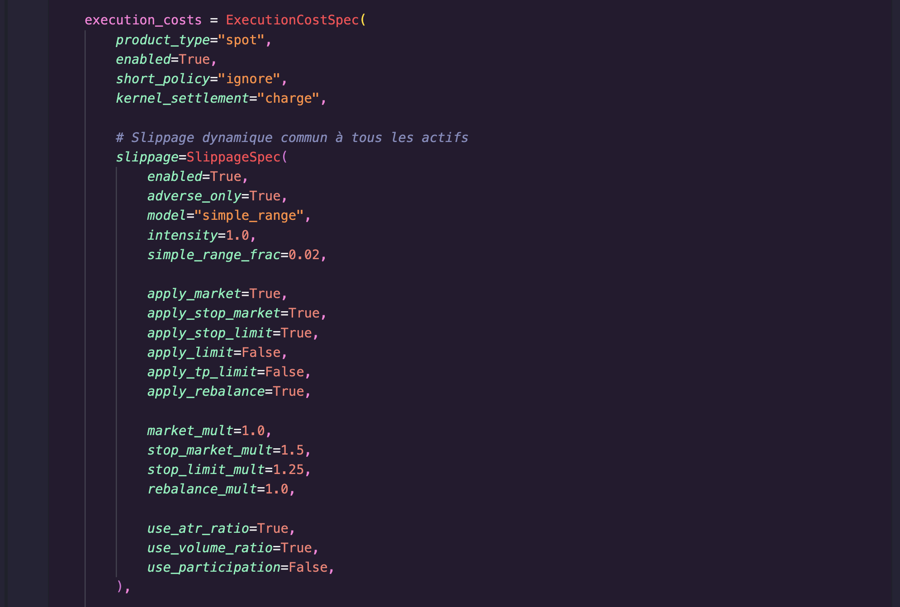
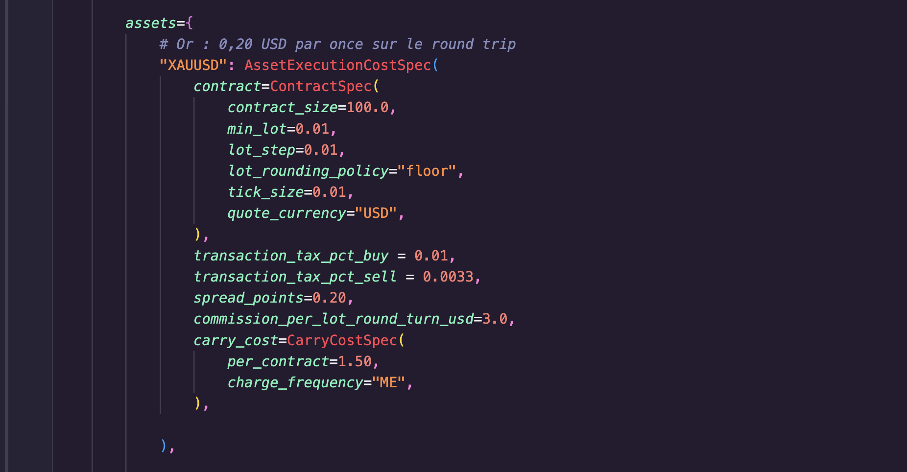
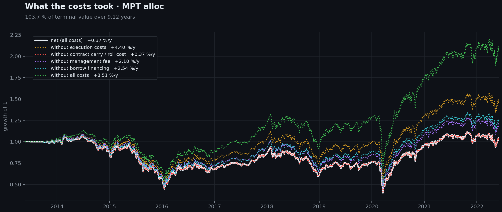
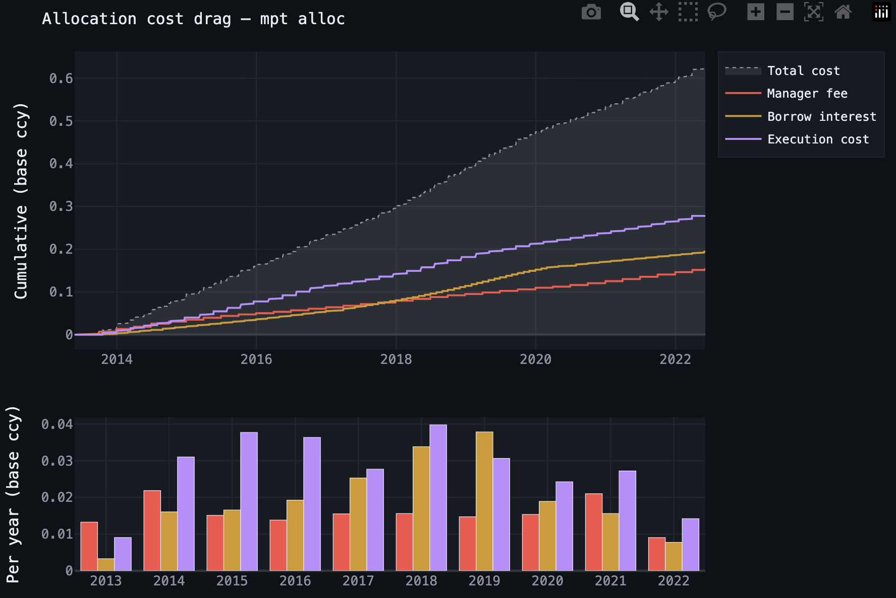

Un coût n'est réel que lorsqu'il atteint la NAV.
Spread, commission, taxe, slippage, portage d'un contrat, frais de gestion et financement n'apparaissent ni au même moment ni au même endroit. Le moteur les applique là où ils naissent, les rapproche par actif, puis mesure séparément l'incidence de chaque catégorie de coûts sur la trajectoire du portefeuille. Pour les coûts d'exécution, cette page traite la famille spot.
Une configuration volontairement sévère pour rendre chaque débit visible
La même allocation MPT long-only porte sur cinq marchés : l'or, la livre-dollar, le Brent, le S&P 500 et le DAX, avec 100 000 de capital initial. Le portefeuille emprunte en plus 100 % du capital initial pendant toute la période, au SOFR augmenté de 150 points de base.
La taxe appliquée uniquement à l'or, 1 % à l'achat et 0,33 % à la vente, est un paramètre de démonstration, pas l'hypothèse d'un marché ou d'un courtier. Comme le portefeuille ferme puis rouvre ses lignes à chaque rebalancement, elle frappe chaque jambe exécutée et domine volontairement le résultat.
Le run utilise product_type="spot".
ExecutionCostSpec prend actuellement en charge deux familles de coûts
d'exécution, spot et cfd. L'argument
product_type sélectionne celle qui est utilisée. Le rapprochement présenté
ici utilise la famille spot. Les frais de portefeuille et le financement
restent comptabilisés séparément.
Spread, commission, taxe, impact résiduel et slippage, calculés sur les jambes réellement exécutées.
Carry ou coût de roll attaché à l'instrument et débité selon son propre calendrier.
Frais de gestion et de surperformance, avec une horloge de provision et une autre de paiement.
Intérêts de l'emprunt indexés sur une série de taux overnight, séparés du carry des contrats.


Du prix exécuté au total payé, actif par actif
exécution = spread + commission + taxe + impact résiduel + slippage, puis
total = exécution + carry. Le slippage est observé dans l'écart entre le prix
cible et le prix de fill : son effet est déjà contenu dans la NAV et n'est pas débité une
seconde fois.
| Actif | Spread | Commission | Taxe | Impact résiduel | Slippage | Exécution | Carry / roll | Total | % capital | Carry pb/an | Slip fill pb A/R | Dates carry |
|---|---|---|---|---|---|---|---|---|---|---|---|---|
| XAUUSD | 254,95 | 38,24 | 24 272,51 | 14,93 | 1 822,06 | 26 402,69 | 46,15 | 26 448,84 | 26,4488 % | 1,4 | 10,273 | 99 |
| BRENTCMDUSD | 516,59 | 516,59 | 0,00 | 103,66 | 2 652,47 | 3 789,30 | 0,00 | 3 789,30 | 3,7893 % | 0,0 | 23,327 | 0 |
| USA500IDXUSD | 194,38 | 1 166,29 | 0,00 | 76,20 | 951,12 | 2 387,99 | 0,00 | 2 387,99 | 2,3880 % | 0,0 | 9,275 | 0 |
| DEUIDXEUR | 131,61 | 394,84 | 0,00 | 0,58 | 1 702,83 | 2 229,86 | 0,00 | 2 229,86 | 2,2299 % | 0,0 | 11,152 | 0 |
| GBPUSD | 87,23 | 32,71 | 0,00 | 1,14 | 882,34 | 1 003,43 | 0,00 | 1 003,43 | 1,0034 % | 0,0 | 5,821 | 0 |
| Portefeuille | 1 184,76 | 2 148,67 | 24 272,51 | 196,51 | 8 010,82 | 35 813,27 | 46,15 | 35 859,42 | 35,8594 % | s.o. | s.o. | 99 |
Voir le même rapprochement en points de capital
Dans cette vue, 1,00 correspond au capital initial de 100 000.
| Actif | Spread | Commission | Taxe | Impact résiduel | Slippage | Exécution | Carry / roll | Total | % capital | Carry pb/an | Slip fill pb A/R | Dates carry |
|---|---|---|---|---|---|---|---|---|---|---|---|---|
| XAUUSD | 0,002550 | 0,000382 | 0,242725 | 0,000149 | 0,018221 | 0,264027 | 0,000461 | 0,264488 | 26,4488 % | 1,4 | 10,273 | 99 |
| BRENTCMDUSD | 0,005166 | 0,005166 | 0,000000 | 0,001037 | 0,026525 | 0,037893 | 0,000000 | 0,037893 | 3,7893 % | 0,0 | 23,327 | 0 |
| USA500IDXUSD | 0,001944 | 0,011663 | 0,000000 | 0,000762 | 0,009511 | 0,023880 | 0,000000 | 0,023880 | 2,3880 % | 0,0 | 9,275 | 0 |
| DEUIDXEUR | 0,001316 | 0,003948 | 0,000000 | 0,000006 | 0,017028 | 0,022299 | 0,000000 | 0,022299 | 2,2299 % | 0,0 | 11,152 | 0 |
| GBPUSD | 0,000872 | 0,000327 | 0,000000 | 0,000011 | 0,008823 | 0,010034 | 0,000000 | 0,010034 | 1,0034 % | 0,0 | 5,821 | 0 |
| Portefeuille | 0,011848 | 0,021487 | 0,242725 | 0,001965 | 0,080108 | 0,358133 | 0,000461 | 0,358594 | 35,8594 % | s.o. | s.o. | 99 |
Les 24 272,51 de taxe ne viennent pas d'un taux appliqué une seule fois au capital. Ils sont la somme de 1 % sur chaque achat d'or et de 0,33 % sur chaque vente, sur toute la rotation du portefeuille. Le tableau rend justement visible cette différence entre un taux déclaré et ce qui a réellement été payé.
Du rendement avant coûts au rendement net

« 103,7 % de la valeur terminale » compare le coût cumulé à la valeur finale du run ; ce n'est ni 103,7 % du capital initial ni une perte annuelle. Avec la taxe volontairement punitive, le run passe de +8,51 %/an avant coûts à +0,37 %/an net. La figure sert à vérifier la propagation des coûts, pas à proposer une hypothèse réaliste de rendement.

Un modèle de coût doit pouvoir être rapproché, pas seulement déclaré
Le run principal du moteur utilise une hypothèse moins sévère et un watcher. Son tableau d'exécution, pour 3 606,69 de coûts totaux, est publié dans la page moteur.
Les paramètres restent des hypothèses : ni le spread, ni le slippage, ni les taxes ne sont présentés comme les conditions d'un courtier particulier. Ce qui est contrôlé ici est la chaîne de calcul : convention du contrat, jambe exécutée, débit du kernel, conversion en devise du compte, rapprochement par actif et effet final sur la NAV.
Sigles et conventions de lecture
- NAV
- Net Asset Value : valeur liquidative, soit la valeur nette du portefeuille.
- MPT
- Modern Portfolio Theory : théorie moderne du portefeuille.
- SOFR
- Secured Overnight Financing Rate : taux de financement garanti au jour le jour en dollars américains.
- CFD
- Contract for Difference : contrat sur différence.
- ATR
- Average True Range : amplitude vraie moyenne, utilisée ici comme mesure de volatilité.
- pb
- Basis point : point de base. Un point de base correspond à 0,01 point de pourcentage.
- A/R
- Round trip : aller-retour, soit l'ouverture puis la fermeture complète d'une position.
- ME
- Month End : fin de mois, utilisée comme fréquence de facturation.
- XAU
- Gold : code international représentant une once troy d'or.
- USD
- United States Dollar : dollar américain.
- GBP
- British pound : livre sterling.
- EUR
- Euro : monnaie commune européenne.
- CMD
- Commodity : matière première dans les identifiants d'actifs utilisés ici.
- IDX
- Index : indice dans les identifiants d'actifs utilisés ici.
- USA
- United States of America : États-Unis dans les identifiants d'actifs utilisés ici.
- DEU
- Deutschland : Allemagne dans les identifiants d'actifs utilisés ici.
- S&P 500
- Standard & Poor's 500 : indice regroupant cinq cents grandes sociétés cotées aux États-Unis.
- s.o.
- Sans objet : la mesure ne peut pas être interprétée au niveau agrégé du portefeuille.